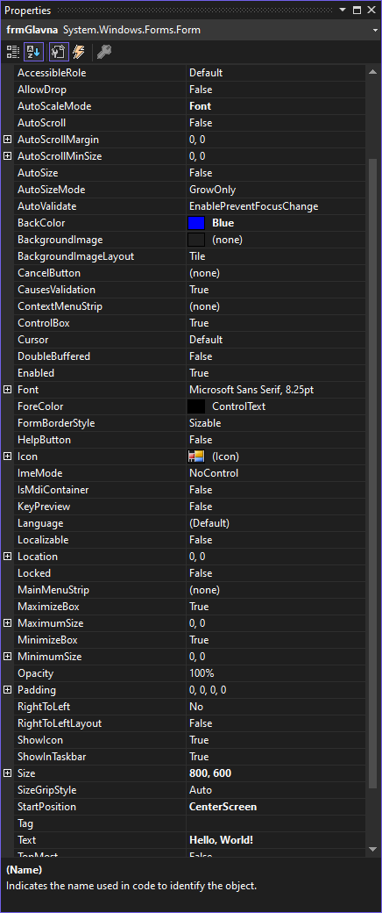

Својства¶
У Windows Forms App (.NET Framework) пројектима својства (енгл. Properties) представљају карактеристике, односно атрибуте објеката, као што су форме, разне контроле и други елементи корисничког интерфејса. Својства омогућавају постављање и приступ вредностима које одређују изглед тих објеката.
Свако својство има гетер и сетер методе које омогућавају читање (get) и
постављање (set) вредности својства. На пример, својство Text може да буде
дефинисано овако:
public string Text
{
get { return text; }
set { text = value; }
}
Својства се дефинишу унутар класа и могу бити било ког типа података. На пример, нека контрола може да има дефинисана својства целобројног типа за ширину и висину контроле на следећи начин:
public class NekaKontrola : Control
{
public int Width { get; set; }
public int Height { get; set; }
}
У претходној лекцији мењао си одређена својства форме у Properties прозору
тј. у времену дизајнирања апликације, а дефинисао си и неке догађаје и у тим
догађајима мењао својства форме у коду, тј. у току извршавања програма.
Својства форми контрола у Properties прозору организована су по категоријама
Accessibility, Apperance, Behavior… зато што је притиснута икона
Categorized на врху Properties прозора. Ако ти је лакше да својства тражиш
по абецедном распореду, кликни на икону Alphabetical која се налази поред
иконе Categorized. Корисно је и да знаш да се својства која си мењао
приказују задебљаним фонтом.

Сва својства наведена у Properties прозору можеш мењати и у коду, тј. у току
извршавања програма. Има их много, па је препорука да увек користиш доступну
документацију.
Постоји могућност да сâм дефинишеш својства унутар класе коју креираш:
public class MojaKontrola : Control
{
private string mojTekst;
public string MojTekst
{
get { return mojTekst; }
set { mojTekst = nekaVrednost; Invalidate(); }
}
}
Метода Invalidate(), служи за означавање контроле као „невалидне”, што
подразумева да је потребно поново исцртати (енгл. redraw) контролу.
Својства се могу повезати са подацима како би аутоматски рефлектовала промене
у подацима. На пример, својство Text неке форме може да буде повезано са
пољем ImeKupca из табеле Kupci у некој бази података, када се подаци из
те табеле учитају у DataSet ds, односно у скуп података:
this.DataBindings.Add(new Binding ("Text", ds, "Kupci.ImeKupca"));
Рад са скуповима података и базама података биће тема у IV разреду.